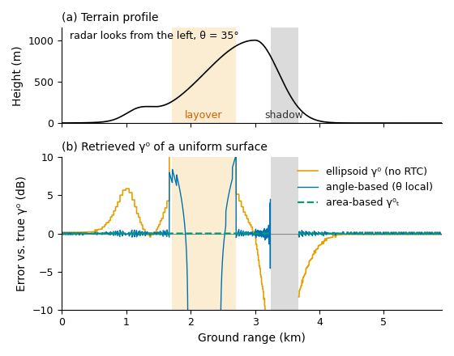

| SAR Concepts: Radiometric Terrain Correction in Depth |
Radiometric terrain correction (RTC) removes the brightness that relief adds to a SAR image, so that a slope facing the radar and one facing away give similar values for the same surface. The result, terrain-flattened γ0 (γ0T), is the basis of analysis-ready backscatter. How it is computed, and with which DEM, decides how far you can trust values on slopes.
The radar sorts echoes by slant range. A slope facing the radar packs more ground into one range cell and returns more power; a slope facing away spreads the cell over less ground. The flat-ellipsoid conversion γ0E = β0 · tan θE (see Radiometry) ignores this. For a planar slope tilted by α in the range direction (positive towards the radar) and a surface of uniform γ0,
γ0E / γ0 = tan θE / tan(θE − α)
where θE is the ellipsoid incidence angle and θE − α the local incidence angle (see SAR geometry).
| Range slope α | −30° | −15° | −5° | +5° | +15° | +25° | +30° |
|---|---|---|---|---|---|---|---|
| θE = 30° (Sentinel-1 IW near range) | −4.8 | −2.4 | −0.8 | +0.9 | +3.3 | +8.2 | layover onset |
| θE = 35° | −4.9 | −2.3 | −0.8 | +0.8 | +2.8 | +6.0 | +9.0 |
| θE = 45° (Sentinel-1 IW far range) | −5.7 | −2.4 | −0.8 | +0.8 | +2.4 | +4.4 | +5.7 |
Table 1. Terrain-induced error of γ0E in dB for a uniform surface, from the equation above. Negative slopes face away from the radar.
Angle-based methods replace θE by a DEM-derived angle for each output pixel, e.g. σ0 = β0 · sin θproj and γ0 = σ0 / cos θproj, with θproj the local incidence angle projected into the range plane (Ulander 1996; Kellndorfer et al. 1998). This assumes that each image pixel sees one planar facet.
Area-based normalisation (Small 2011) simulates the image instead. Every DEM facet is placed in radar geometry, its area projected perpendicular to the line of sight is added to the pixel(s) it falls into, and
γ0T = β0 · Aβ / Aγ,T
where Aβ is the pixel area in slant-range geometry and Aγ,T the summed projected facet area. For a planar slope tilted only in range both give the same answer. They differ where a pixel collects several facets: in layover and strong foreshortening, on slopes tilted in azimuth, and wherever the DEM is finer than the pixel. There the single angle is wrong or undefined (it does not exist once α > θE), while the summed area stays finite (Frey et al. 2013). Figure 1 shows the difference.

Figure 1. (a) Synthetic ridge at θE = 35° with layover (orange) and shadow (grey). (b) Error of the retrieved γ0 for a uniform surface, simulated with 1 m facets and 10 m slant-range pixels. The angle-based value stays within about 0.5 dB on ordinary slopes but fails in layover. γ0T uses the same area model as the simulation, so it is exact outside shadow.
Beta0 band is divided by Aγ,T / Aβ. Pixels whose
Aγ,T is below 5% (for GRD input effectively 5%/sin θE) of the
flat-ellipsoid value Aβ / tan θE (in practice shadow and slopes near grazing)
become no-data.Layover pixels are not masked: they receive area from several facets, so their γ0T is a valid average but mixes different ground positions. Output Terrain Flattened Sigma0 uses the facet area on the ground, Aσ,T, instead: σ0T = β0 · Aβ / Aσ,T.
Calibrate to β0 (linear), multilook if wanted, run Terrain Flattening in radar geometry, then Terrain Correction. Flattening comes first because facet areas add up in the radar pixel they share; after resampling to a map grid, layover contributions can no longer be separated. Terrain Flattening refuses map-projected input. Full chain: GRD to Terrain-Flattened Backscatter.
Local resolution weighting (Small 2012) composites several γ0T images, weighting each by the inverse of its contributing area, so the best-resolved pass dominates each pixel. See Multitemporal backscatter stacks.
The CEOS-ARD NRB specification (v5.5) requires at threshold level: linear γ0T per polarisation from a published area-modelling algorithm; one named DEM (and EGM) for flattening and geocoding; a data mask with layover and shadow as invalid; a local incidence angle image; a snapped grid; and source, noise-removal and geolocation metadata. Target level adds a finer DEM, scattering-area, γ-to-σ ratio, ellipsoid-angle and DEM layers, and separate layover and shadow flags.
SNAP produces most layers: Gamma0, Sigma0 (their ratio is the γ-to-σ ratio)
and simulatedImage from Terrain Flattening; angle bands, DEM, layoverShadowMask and grid
alignment from Terrain Correction. It writes no NRB metadata or self-assessment, so its output is not CEOS-ARD compliant
by itself.
Terrain-Flattening) reads bands whose names start with
Beta0, or T3, C3, C2 matrix bands, and writes Gamma0_<pol> (linear intensity)
in radar geometry (product suffix _RTC). Defaults: Copernicus 30m Global DEM,
BILINEAR_INTERPOLATION. Uncalibrated input is calibrated to β0 first (no noise
removal); a calibrated product without Beta0 bands fails with "TerrainFlattening requires beta0 or
T3, C3, C2 as input". Matrix elements are divided by the same area ratio.simulatedImage, the ratio Aγ,T /
Aβ, so γ0T = β0 / simulatedImage. It is
the weight input of Multitemporal Compositing.nodataValueAtSea, default on) leaves DEM gaps as no-data;
off, gaps are filled with the EGM96 geoid height (sea level).Gamma0/Beta0 mix the ellipsoid σ0 from the
product LUT with a projected local angle and are not a consistent normalisation.Gamma0 from Terrain Flattening should agree with
β0 · tan θE to within a few tenths of a dB. A systematic offset across
flat areas points to a processing problem (see Quality control).Beta0_VV_dB is accepted and
divided as if linear.Sigma0 only. Terrain Flattening needs Beta0; σ0 already
contains a flat-earth correction.layoverShadowMask.Workflows: GRD to Terrain-Flattened Backscatter.